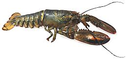
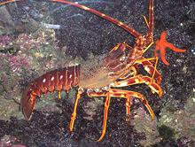

SAFARI
Users
General & History
The category "Lobster" includes several crustacean families that are not necessarily closely related. True lobsters have large claws. Crayfish are closely related to true lobsters. Spiny lobsters, which have no claws but very strong jaws, are related only as members of the order Decapoda, which makes them as distantly related as crabs. Spiny lobsters are warm water creatures while true lobsters reach their maximum development in the cold waters of the North Atlantic off the coast of New England (U.S.) and Canada. All the "lobsters" listed here (and some that aren't) are considered highly desirable food items.
Buying, Cleaning & Cooking Lobsters
This section will be expanded as time permits, and moved to a separate page, but right now, we treat only the controversial issue of killing lobsters.
Killing Lobsters
If you've bought your lobster live you have to kill it before you can eat it. Dying is never a pleasant experience, not for us or for lobsters, so you want to kill it as cleanly and quickly as possible. The question of whether "lobsters don't feel pain like we do" is still unresolved with conflicting experimental data, but we should presume they do. There are several methods used.
- The traditional method is by dumping the lobster face first into a big pot of boiling water. Some consider this cruel and say the lobsters scream. Looking at it logically, the lobster's main brain is right behind the eyes, so there may or may not be a moment of pain, but the brain should be cooked in less than a second and the pain forgotten. The "scream" is actually air exiting from under the shell due to the temperature change. The body may still twitch for a few seconds, but there's no lobster in there anymore.
- Set a knife lengthwise over the front of the head and hit it down with a soft faced mallet splitting the front of the head and the brain. This should produce an almost instant loss of consciousness, but the body may still react for a minute or more. You see, the lobster has a distributed brain, so parts are still functional even though the main center of perception is gone.
- Some feel the lobster should be sedated by stashing in the freezer for twenty minutes to an hour or more before dropping in the boiling water. This may or may not be effective. Personally, I'd not be too pleased at being slowly frozen alive.
- Others feel the lobster should be sedated by soaking in a salt solution before dropping in the boiling water. Having observed crabs react to water of the wrong salinity, I'm not going to recommend this without more evidence, it may be very painful to the lobster.
Varieties
True Lobsters
True lobsters (family Nephropidae), also known as clawed lobsters, exist in all seas and to a depth of over 11,000 feet. There are at least 19 genera. Most are small, and only a few species are harvested commercially.
American Lobster [Maine Lobster, Northern Lobster, Homarus americanus] These true lobsters are found as far south as North Carolina but achieve their maximum numbers and development from the US state of Maine to Labrador, Canada. They can grow as large as 44 pounds and over 3 feet long but the average market size is between 1.5 and 2 pounds. Lobsters are brown to greenish but about 1 in a million is bright blue and about one in 30 million is yellow. A very few are albinos, which don't turn red when cooked as the others do. These lobsters are of considerable medical interest because they apparently can live practically forever if not killed by predators. They have the ability to repair their own DNA so they do not age. The American Lobster has been over-fished. Aquaculture has not been
successful because lobsters grow slowly and because in a crowded
artificial environment they tend to cannibalism.
Photo © i0114
.
European Lobster[Common Lobster; Homarus gammarus]
These true lobsters are found in the East Atlantic, from Norway to
Morocco, and in the Mediterranean west of Cyprus, and on the north
coast of the Black Sea. They are closely related to the American
lobster. These lobsters are normally blue and can grow to about 24
inches body length and around 12 pounds, but commercially range from
9 to 15 inches and 1-1/2 to 5 pounds. Conservation status is LC
(Least Concern). Photo by H.Zell distributed under
license Creative Commons
Attribution-Share Alike v3.0 Unported.
Langoustine[Scampi, Norway Lobster, Dublin Bay Prawn; Nephrops norvegicus] These true lobsters are found in the Northeast Atlantic, from Iceland to Norway and down through the North Sea to Portugal. There is also a population in the North Adriatic Sea between Italy and Greece. They are the most important crustacean catch in European waters. They are quite small, growing to about 8 inches long, including
the tail and their very elongated claws. Conservation status is LC
(Least Concern). Very similar and closely related species of genus
Metanephrops are fished around New Zealand and Japan.
Photo by Hans Hillewaert distributed under license Creative
Commons
Attribution-ShareAlike v3.0 Unported.
|
Spiny Lobsters
[Langouste, Rock Lobster; Crayfish (Australia); family Palinuridae, genus Palinurus (Mediterranean), Panulirus (Americas, Australia & China)]
Spiny Lobsters are no closer related to true lobsters than crabs are. Unlike true lobsters, they have no claws but very strong jaws and a lot of protective spines. Found worldwide in both hemispheres they prefer warmer waters and are generally nocturnal. The Australians, who tend to get everything upside down and backwards, call them Crayfish. Spiny lobsters have been around since the Cretaceous, about 110 million years ago.
Western Rock Lobster[Crayfish (Australia); Panulirus cygnus]
Native to the West Coast of Australia, this lobster accounts for the
most valuable fishery in Australia with somewhere around 10,000 tons
landed per year. It is a large lobster with the largest recorded
weighing 15 pounds, but they are normally much smaller than that.
Conservation status is LC (least concern) and the highly regulated
fishery is certified as sustainable.
Photographs by Gnangarra distributed under license
Creative Commons
Attribution-Share Alike v3.0 Australia, attribution required
.
California Spiny Lobster[Bugs (California); Panulirus interruptus]
Found from Monterey Bay, California to the tip of Baja California,
these lobster have no claws, but jaws strong enough to crush clams.
They can grow to 3 feet long and the official weight record is 16
pounds, but specimens to 26 pounds have been reported unofficially.
The fishery is quite efficient so few make it beyond 2 pounds today.
It is also a highly regulated fishery and considered sustainable.
Some of the big Asian markets here in Los Angeles have these live
when they are in season. Photo U.S. Government NOAA
= public domain.
Caribbean Spiny Lobster[Florida Spiny Lobster; Panulirus argus]
This lobster is found in the tropical and subtropical Atlantic,
Caribbean and Gulf of Mexico, from North Carolina to Reo de Janeiro,
Brazil. They can grow up to 16 pounds. Most are caught in the Florida
keys, but other areas of the Caribbean also harvest them,
particularly the Bahamas. Conservation status is DD (Data Deficient)
but the fishery is tightly regulated in Florida waters.
Photo by
Douglas
Whitaker distributed under license Creative Commons
Attribution-ShareAlike 2.5 Generic.
Mediterranean Spiny Lobster [Common Spiny Lobster, Red Lobster; Crayfish, Cray (Ireland); Palinurus elephas]
This lobster is found in the East Atlantic from Norway to Morocco and
in the Mediterranean west of Cyprus. They can reach 24 inches in
length, but are rarely much over 12 inches.
Photo by Georges Jansoone distributed under license
Creative Commons
Attribution-Share Alike v3.0 Unported.
|
Slipper Lobsters
[Mitten Lobster; Family Scyllaridae]These relatives of the Spiny Lobsters are found in warmer waters the world around. They are generally nocturnal, clinging to the underside of ledges and caves during the day and coming out at night to eat mollusks, crustaceans and sometimes sea urchins. Slipper Lobsters are characterized by their main antennae being enlarged and flattened into a shield shape. There are currently 22 recognized genera, but only the 4 most popular for eating are listed here.
West Atlantic & Mediterranean Slipper Lobster[West Atlantic; Lagosta Sapata (Brazil); Scyllarides aequinoctialis | Mediterranean Scyllarides latus]
Both of these very similar lobsters grow to about 12 inches long and
are very much favored as food. The Mediterranean ranges into the warmer
parts of the eastern Atlantic, while the West Atlantic ranges from
South Carolina through the Caribbean and Gulf of Mexico to
São Paulo Brazil. It is particularly popular in Brazil where
it is called Cavaquinha (ukelele-lady). The Mediterranean has been
seriously overfished and is no longer common in most of its range.
the West Atlantic is rated "Least Concern". A Brazilian expert says
the way to select these is to press the underside of the tail. If it
is too springy it isn't meaty enough. The photo is Scyllarides
Latus.
Photo by Peter Koelbi licensed under Creative Commons
Attribution-ShareAlike v2.5 Generic.
Balmain Bug & Moreton Bay Bug[Balmain Bug, Flathead Lobster; Ibacus peronii | Bay Bug; Thenus Orientalls]
These lobsters, though of different genus, are often confused and look
much alike. The Balmain supports the largest fishery but lives only
around northeastern Australia, while the Moreton Bay is found across
the Indo Pacific region and is particularly popular in Singapore. The
Moreton bay is preferred to the Balmain in Australia as the later is
said to sometimes taste faintly of garlic. Both can grow to as much
as 9 inches long but are usually shorter. The photo specimen is a
cooked Moreton Bay Bug.
Photo by Kingturkey distributed under license Creative Commons
Attribution-Share Alike v3.0 Unported.
Sculptured Mitten Lobster & Japanese Mitten Lobster[Sculptured; Ula-pehu, Ula-pápapa (Hawaii); Parribacus antarcticus | Japanese; Zori-ebi; Parribacus japonicus]
These closely related lobster are fairly small, the Sculptured growing
to nearly 8 inches and the Japanese growing to just over 6 inches
long. The Sculptured has a wide range: western Atlantic from Florida
to northern Brazil, the southern coast of Africa and the Indian
Ocean, as well as Hawaii and Polynesia. The Japanese just lives around
Japan. All species of Parribacus are used locally as food and
the Japanese is sometimes fished commercially. The photo is of the
Japanese.
Photo by OpenCage licensed under Creative Commons
Attribution-ShareAlike v2.5 Generic.
|
Crayfish
[Crawfish, Crawdads, Mudbugs; Yabby, Koura (Australia); families Cambaridae (American South, East Asia) | Astacidae (Eurasia, Western North America) | Parastacidae (South America, Madagascar, Australasia)]
Crayfish are freshwater lobsters, closely related to the true lobsters, but generally much smaller than ocean lobsters. The photo specimens (pre-cooked and frozen) were farm raised in China, the larger being 3-1/2 inches long from nose tip to tail tip and weighing 0.7 ounces. The whole tray of 19 of them weighed 11.1 ounces for 0.58 ounces each and the whole 19 yielded 1.7 ounces of tail meat (15%). Nothing else edible was found on these critters. Considering the tray cost US $2.25, that's $21 per edible pound. Live crayfish are now fairly common in some of the larger Asian markets here in Los Angeles.
Legend has it that when the French were forced out of Canada by the
British, they took lobsters along on their long trek - but as they
went south the lobsters kept getting smaller and smaller, until by time
they got to Louisiana they were crayfish.
Langostino
[Squat Lobster; family Galatheidae. Species Cervimunida johni, Pleuroncodes monodon and Munida gregaria]
The name "Langostino" means different things in different parts of the world. In the United States, the FDA allows it to be used for the three species of Squat Lobsters listed above. Squat Lobsters are rather small, with a body length of between 2 and 5 inches, but they keep their tail tightly tucked under their abdomen. Nearly all fishing activity is on the west coast of Central and South America.
These are not actually lobsters, but a kind of crab, related to
hermit crabs, but we list them here because they are always called "Squat
Lobsters". The meat of these critters is used mainly by restaurants,
and there has been some controversy over naming of what's in the
finished dish.
Photo of Galathea squamifera by Matthias Buschmann
distributed under license Creative Commons
Attribution-Share Alike v3.0 Unported.
Health & Nutrition
Lobster is low in fat and high in protein, but, like other crustaceans it is moderately high in cholesterol. When the AHA (American Heart Association) was running their big scare on cholesterol we were told to avoid shrimp and lobster. As usual, this was based on incomplete and defective studies. Most cholesterol is manufactured within the body (and the body needs quite a bit of it - your brain is very high in cholesterol, and it is required in cell membranes and other very important locations).
If you get a little more dietary cholesterol, the body manufactures less of its own. There are, however, some people who are sensitive to dietary cholesterol - so you should know if that applies to you.
Mercury content of lobster is comparable to low mercury fish, about 0.31 parts per million. As the Seychelles Study (L3) found, the mercury content of fish is not much of a problem, even for pregnant women and developing children, so lobster is not a mercury worry. You won't hear much about the Seychelles Study, because by this time so many careers and product pitches depend on the mercury scare.
Links
- L2 - Crayfish - University of Minnesota.
- L3 - University of Rochester - The Seychelles Study - effects of mercury in fish.